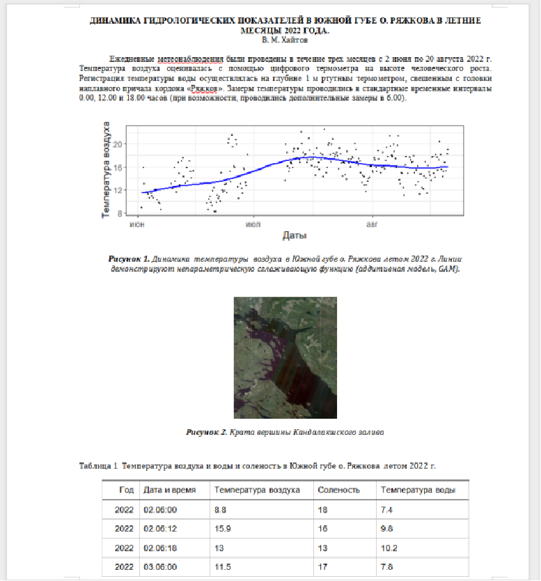

Документ состоит из текста и вставленных в текст объектов (результатов обработки данных, иллюстрации).
Текст
- Заголовки разных уровней.
- Абзацы (параграфы), состоящие из нескольких предложений. - Сноски - Специальные символы и формулы.
Иллюстрации - Изображения, которые не являются результатами обработки, выполненной с помощью программного кода, написанного автором документа (Фотографии, карты, штриховые рисунки и т.п.)
Результаты обработки данных - Визуализации результатов обработки данных (диаграммы, графики и т.п.). - Таблицы - Числовые значения в тексте - Библиографические описания

На подготовку данных к анализу уходит до 80% времени.
Существуют определенные правила предоставления данных.
Данные, построенные в соответствии с этими требованиями, называются tidy data, или опрятные данные.
NA)При работе в Excel не должно быть никаких объединенных ячеек!
Широкий формат: данные максимально структурированы, каждая строка может нести информацию о многих элементарных объектах
Длинный формат: данные минимально структурированы, каждая строка характеризует уникальный объект
Из длинного формата легко получить широкий.
Из широкого формата получить длинный заметно сложнее.
Широкий формат хорош для отчетов, представления обобщенных результатов
Длинный формат хорош для анализа
## Class Sex Age Survived Freq ## 1 1st Male Child No 0 ## 2 2nd Male Child No 0 ## 3 3rd Male Child No 35 ## 4 Crew Male Child No 0 ## 5 1st Female Child No 0 ## 6 2nd Female Child No 0 ## 7 3rd Female Child No 17 ## 8 Crew Female Child No 0 ## 9 1st Male Adult No 118 ## 10 2nd Male Adult No 154 ## 11 3rd Male Adult No 387 ## 12 Crew Male Adult No 670 ## 13 1st Female Adult No 4 ## 14 2nd Female Adult No 13 ## 15 3rd Female Adult No 89 ## 16 Crew Female Adult No 3 ## 17 1st Male Child Yes 5 ## 18 2nd Male Child Yes 11 ## 19 3rd Male Child Yes 13 ## 20 Crew Male Child Yes 0
## Class Sex Age Survived ## 1 3rd Male Child No ## 2 3rd Male Child No ## 3 3rd Male Child No ## 4 3rd Male Child No ## 5 3rd Male Child No ## 6 3rd Male Child No ## 7 3rd Male Child No ## 8 3rd Male Child No ## 9 3rd Male Child No ## 10 3rd Male Child No ## 11 3rd Male Child No ## 12 3rd Male Child No ## 13 3rd Male Child No ## 14 3rd Male Child No ## 15 3rd Male Child No ## 16 3rd Male Child No ## 17 3rd Male Child No ## 18 3rd Male Child No ## 19 3rd Male Child No ## 20 3rd Male Child No